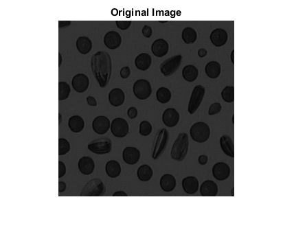
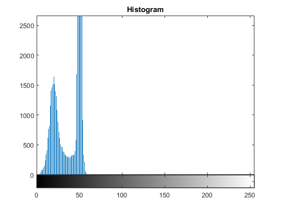
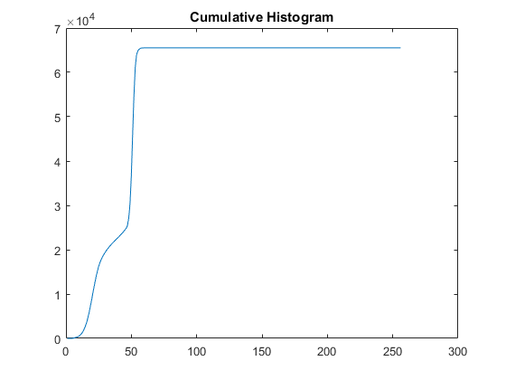
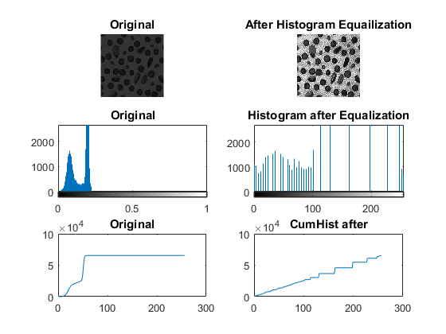
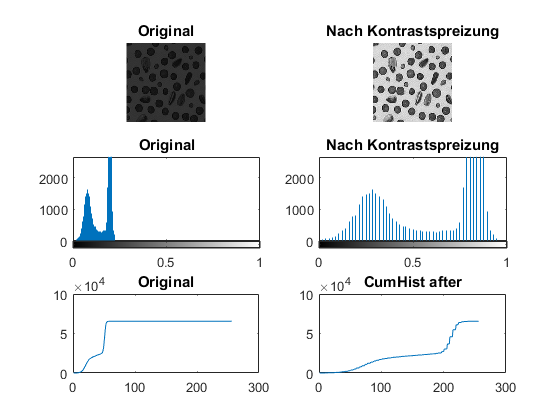
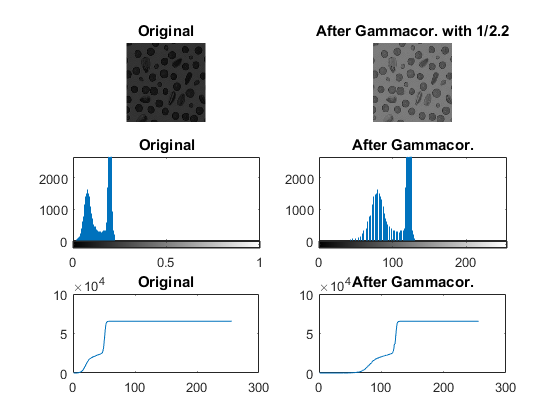
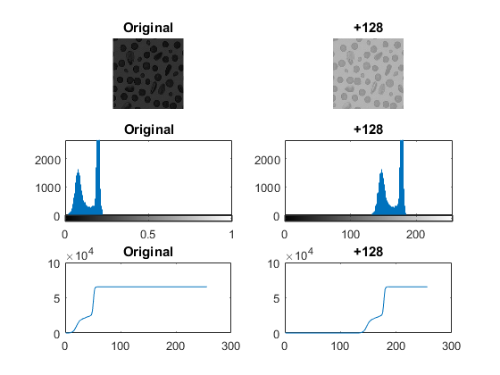
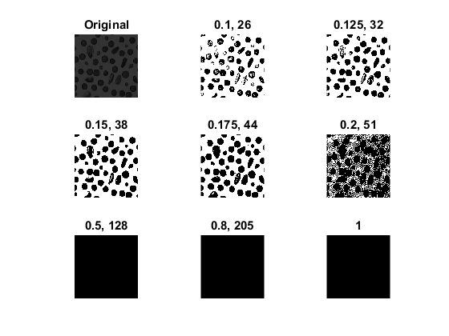

Initialization
clear all; close all; clc; X = imread('Blood2.bmp'); I = im2single(X); % Read and convert to float (0-1) figure(); imshow(I); title('Original Image');
Image Statistics
Imin = min(I(:)); Imax = max(I(:)); Imea = mean(I(:)); Istd = std(I(:)); Ivar = var(I(:)); fprintf ('\nMinimum : %f', Imin); fprintf ('\nMaximum : %f', Imax); fprintf ('\nMittelwert: %f', Imea); fprintf ('\nStd.abw : %f', Istd); fprintf ('\nVarianz : %f', Ivar);
Minimum : 0.015686 Maximum : 0.235294 Mittelwert: 0.157782 Std.abw : 0.055778 Varianz : 0.003111
Histogram
[B,~] = gray2ind (I,256); %Float Graustufen zu 256 Integer-Graustufen figure(); imhist(B); title('Histogram');
Cumulative Histogram
cumHist = cumsum(imhist(B));
figure(); plot(cumHist); title('Cumulative Histogram');
 Histrogram Equalization
fprintf('Histogram Equalization') figure(); subplot(3,2,1); imshow(I); title('Original'); subplot(3,2,3); imhist(I); title('Original'); [B,~] = gray2ind(I,256); % Float to 8bit Int cumHist = cumsum(imhist(B)); subplot(3,2,5); plot(cumHist); title('Original'); I2 = histeq(I); subplot(3,2,2); imshow(I2); title('After Histogram Equailization'); [B,~] = gray2ind(I2,256); % Float to 8bit Int subplot(3,2,4); imhist(B); title('Histogram after Equalization'); cumHist = cumsum(imhist(B)); subplot(3,2,6); plot(cumHist); title('CumHist after');
Histogram Equalization
Image Adjustments - Contrast
fprintf('Image Adjustments - Contrast') figure(); subplot(3,2,1); imshow(I); title('Original'); subplot(3,2,3); imhist(I); title('Original'); [B,~] = gray2ind(I,256); % Float to 8bit Int cumHist = cumsum(imhist(B)); subplot(3,2,5); plot(cumHist); title('Original') I2 = imadjust(I,[Imin Imax],[0 1]); %Kontrasterhöhung durch Spreizung subplot(3,2,2); imshow(I2); title('Nach Kontrastspreizung'); [B,~] = gray2ind(I2,256); subplot(3,2,4); imhist(I2); title('Nach Kontrastspreizung'); cumHist = cumsum(imhist(B)); subplot(3,2,6); plot(cumHist); title('CumHist after');
Image Adjustments - Contrast
Image Adjustments - Gamma Correction
fprintf('Image Adjustments - Gamma Correction') figure(); subplot(3,2,1); imshow(I); title('Original'); subplot(3,2,3); imhist(I); title('Original'); [B,~] = gray2ind(I,256); % Float to 8bit Int cumHist = cumsum(imhist(B)); subplot(3,2,5); plot(cumHist); title('Original') GammaValue = 1.0/2.2; %I2 = 255 * (I/255).^ GammaValue; %Gammakorrektur für Byte Werte I2 = I.^ GammaValue; %Gammakorrektur für Floats (0-1) subplot(3,2,2); imshow(I2); title('After Gammacor. with 1/2.2'); [B,~] = gray2ind(I2,256); subplot(3,2,4); imhist(B); title('After Gammacor.'); cumHist = cumsum(imhist(B)); subplot(3,2,6); plot(cumHist); title('After Gammacor.');
Image Adjustments - Gamma Correction
Image Adjustments - Linear Brightness Correction
fprintf('Linear Brightness Correction') figure(); subplot(3,2,1); imshow(I); title('Original'); subplot(3,2,3); imhist(I); title('Original'); [B,~] = gray2ind(I,256); % Float to 8bit Int cumHist = cumsum(imhist(B)); subplot(3,2,5); plot(cumHist); title('Original') I2 = imadjust(I,[Imin Imax],[Imin+0.5 Imax+0.5]); subplot(3,2,2); imshow(I2); title('+128'); [B,~] = gray2ind(I2,256); subplot(3,2,4); imhist(B); title('+128'); cumHist = cumsum(imhist(B)); subplot(3,2,6); plot(cumHist); title('+128');
Linear Brightness Correction
Binarisierung
fprintf('Binarization') figure(); subplot(3,3,1); imshow(I); title('Original'); subplot(3,3,2); imshow(im2bw(I,0.1)); title('0.1, 26'); subplot(3,3,3); imshow(im2bw(I,0.125)); title('0.125, 32'); subplot(3,3,4); imshow(im2bw(I,0.15)); title('0.15, 38'); subplot(3,3,5); imshow(im2bw(I,0.175)); title('0.175, 44'); subplot(3,3,6); imshow(im2bw(I,0.2)); title('0.2, 51'); subplot(3,3,7); imshow(im2bw(I,0.5)); title('0.5, 128'); subplot(3,3,8); imshow(im2bw(I,0.8)); title('0.8, 205'); subplot(3,3,9); imshow(im2bw(I,1)); title('1');
Binarization